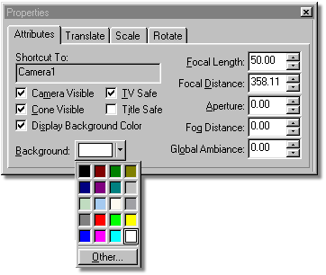

When you build a complete scene, such as a room with walls, where every part
of the final image has something in it, you do not have to worry about
Background Color. However, if parts of the final image have nothing in them, then the
Background Color will appear. The default Background Color is black, but you
can change it by clicking the Background Color color chip. A default system
palette will appear from which you can choose a color, or you can select “Other” and
select your own colors.
When you build a complete scene, such as a room with walls, where every part
of the final image has something in it, you do not have to worry about
Background Color. However, if parts of the final image have nothing in them, then the
Background Color will appear. The default Background Color is black, but you
can change it by clicking the Background Color color chip. A default system
palette will appear from which you can choose a color, or you can select “Other” and
select your own colors.

Background color will be forced to black anytime the Transparency Alpha buffer is selected during rendering.
Related Topics:
Camera Visible
Cone Visible
Display Background Color
TV/Title Safe
Focal Length
Focal Distance
Aperture
Fog Distance
Global Amibance
Camera Translate
Camera Scale
Camera Rotate
Front Projection Maps